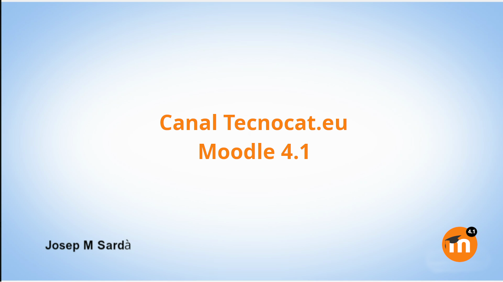
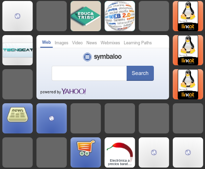
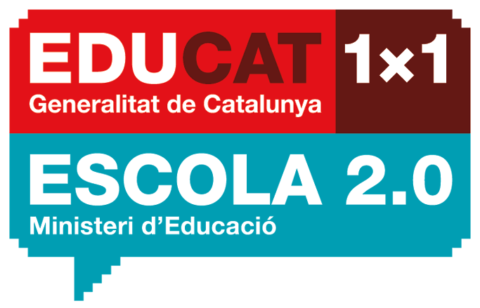

En el vertiginós món de la intel·ligència artificial, mantenir-se actualitzat s’ha convertit en tot un repte. Des de models de llenguatge com GPT-4, Claude i Gemini, fins a sistemes especialitzats en imatges…
Una mica de tot
En el vertiginós món de la intel·ligència artificial, mantenir-se actualitzat s’ha convertit en tot un repte. Des de models de llenguatge com GPT-4, Claude i Gemini, fins a sistemes especialitzats en imatges…

Amb la nova actualització del Moodle del departament, ens han canviat moltes coses de lloc. Us deixo més de 30 vídeos, en què explico diferents elements del nou Moodle. Llista de reproducció…

Amb l’arribada de les pantalles tàctils als centres he creat una sèrie de vídeos de com s’utilitza, des d’elements bàsics d’ús, a com connectar el nostre ordinador, com escriure en presentacions, seguir…

Amb tot aquest temps de confinament, ens hem hagut de reinventar i de passar de classes presencials a classes telemàtiques. Això ha fet que s’obri el debat de quin és el millor…

Simbalo és un bon recurs per fer una recopilació de llocs que ens poden interessar, i que poguem tenir a mà de manera senzilla. Aquí us deixo un exemple. El tauler de…

Linkat és una distribució Linux desenvolupada pel departament d’educació de la Generalitat, basada , actualment, en la distribució més coneguda d’ Ubuntu . Anterior ment la Linkat estava basada en openSuse ,…

Emular un android, sempre és un petit inconvenient, ja que s’ha de muntar tota una arquitectura i fa que vagi una mica lent. Actualment tenim disponible un projecte que munta un android…
Posted by josepm on Monday, 8 December 2014 Ho podeu veure a pantalla complerta clicant en aquest enllaç . O bé en un altra format a aquest altra enllaç.

Clonezilla, és un conjunt d’aplicacions que ens permet clonar, fer una còpia exacta d’un ordinador. És lliure i reconeix molts formats fat, fat32, ext2, ext3, … Tot i tenir un entorn no…

Libreoffice. Desenvolupament d’un treball. Mira el vídeo a YouTube Tot seguit us deixo 4 vídeos, agrupats en una llista, sobre com hem de fer per desenvolupar un treball amb els seus 4…

Després de tenir la pàgina aturada un cert temps i d’alguns problemes tècnics, retornem amb il·lusió l’actualització d’aquesta WEB. Hem recuperat algun material perdut, com la documentació de la linkat per coordinadors.…
Cada any a principi de curs havia de fer una llibreta de notes, com programo les classes en funció dels dies reals de classe doncs havia de mirar el calendari i fer…

Tot i que el programari està en plena evolució i canvi, al llarg dels anys, he anat recollint diversos programes que ens poden ser d’utilitat, així que deixeré un recull dels programes…

Algun cop ens ha calgut tipus de fonts que no tenim instal·lades a l’ordinador, per tenir-les disponibles tenim diferents maneres. Per instal·lar les fonts tenim tres maneres diferents, anem a veure cada…
App inventor és una eina força potent, i com a tal ens permet manipular dades emmagatzemades en diferents llocs. En aquest cas parlem de treballar amb Fusion tables, o bé amb fitxers…

Provar les aplicacions per a móbils creades amb App Inventor amb l’emulador, és una tasca complicada i ferregosa, que sempre porta problemes. Una solució és virtualitzar un android, per exemple amb virtualbox,…

Educat1x1, va ser un projecte engegat per el departament d’educació que pretenia digitalitzar l’ensenyament. El seu objectiu era que cada alumne tingués un ordinador, i els llibres estiguessin al núvol i tot…